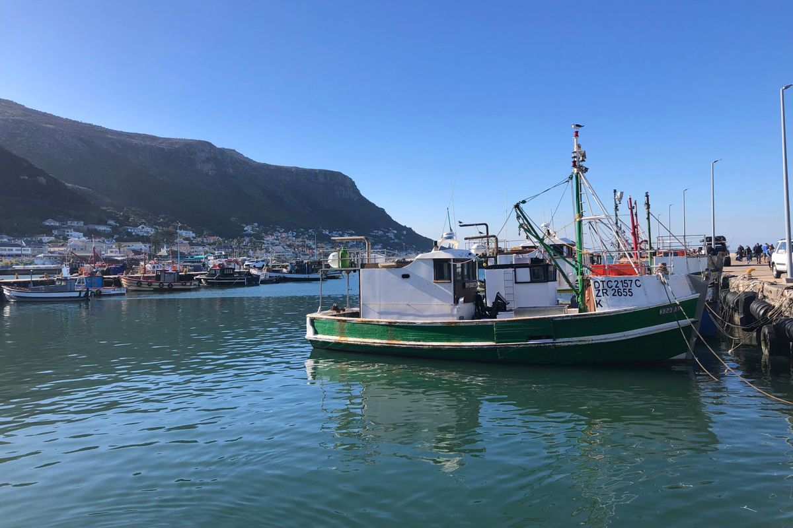

Ocean Forecasting Explorer
How a forecast is made, how it is used on the coast, a 7 day decision challenge and a directory of official forecasting services.
Open the Explorer
Interactive tools, factsheets, brochures and infographics on ocean forecasting, for students, professionals and the public in Africa and beyond. Texts under CC BY 4.0.
How a forecast is made, how it is used on the coast, a 7 day decision challenge and a directory of official forecasting services.
Open the ExplorerThe same activity in a short form: three learning modules, a 3 day challenge and six services, about 10 minutes per section. For classrooms, workshops and first visits.
Open the quick versionThe OPERA Ocean Literacy series (factsheets OL-002 to OL-033, brochures and infographics) is published on the OceanPrediction DCC Resource Center. Direct links will be added here as the documents are released.